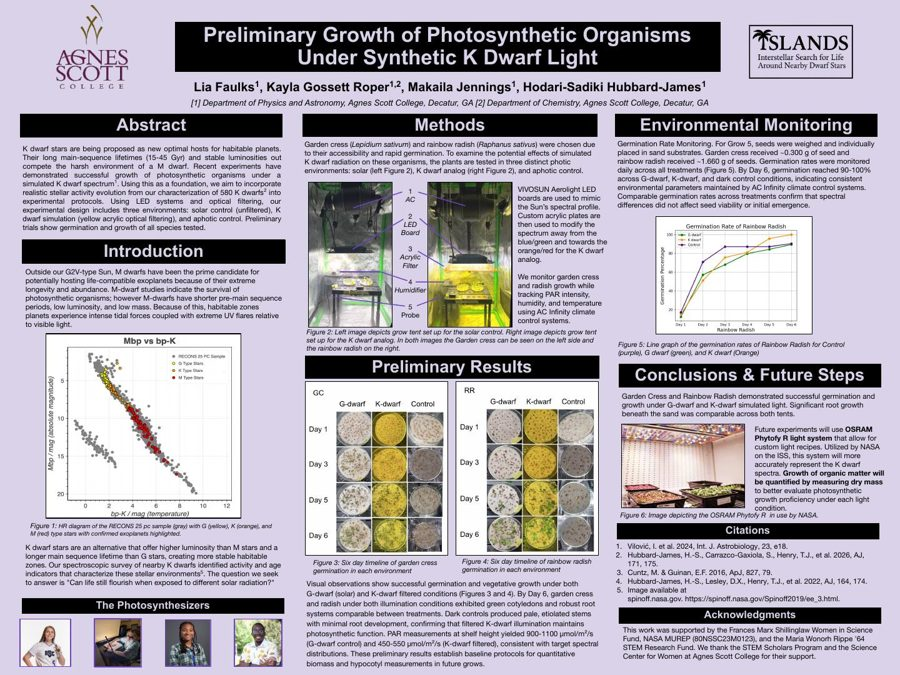
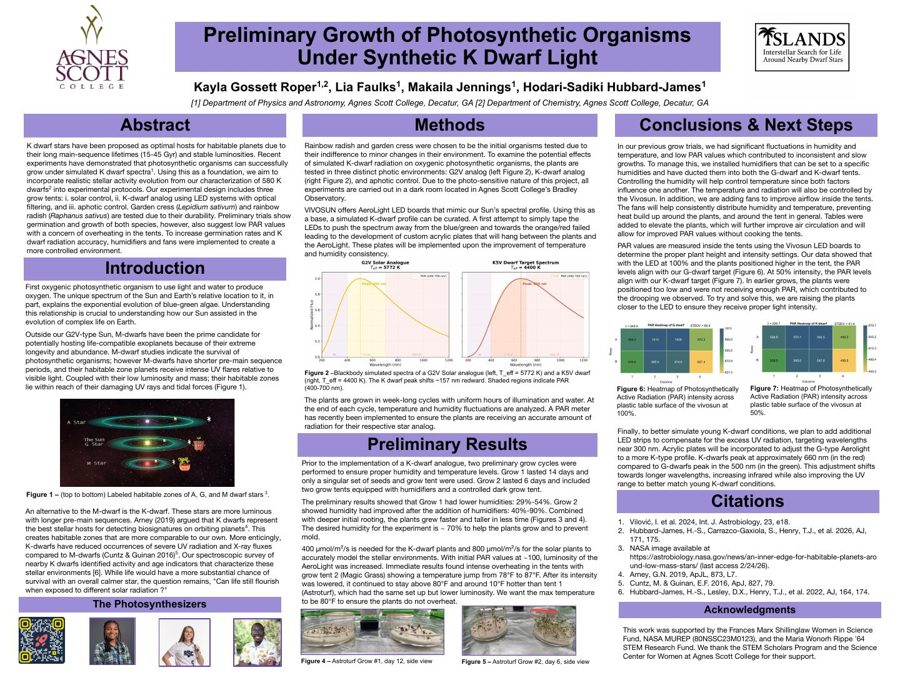
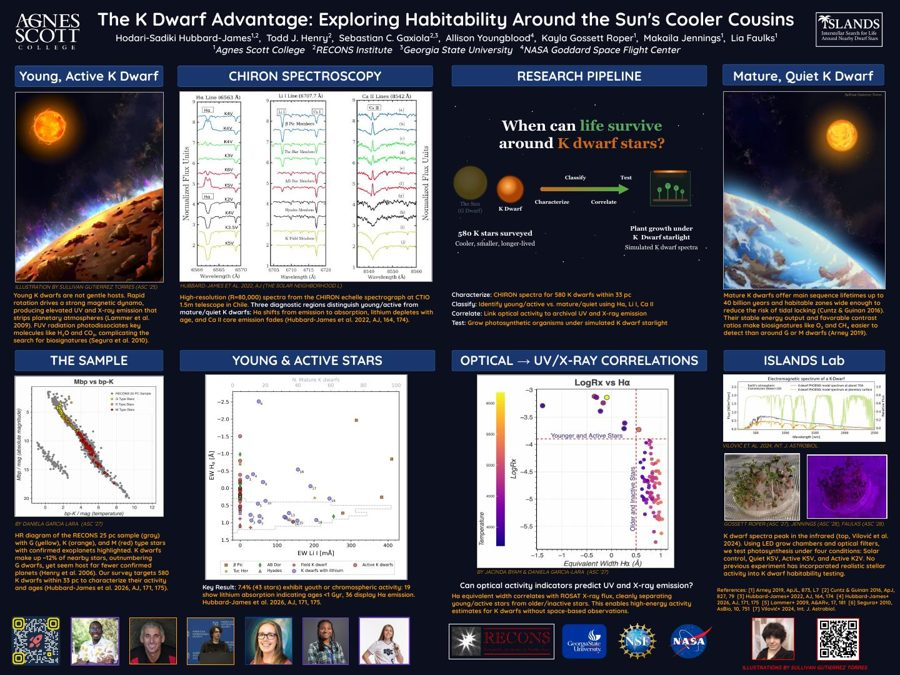
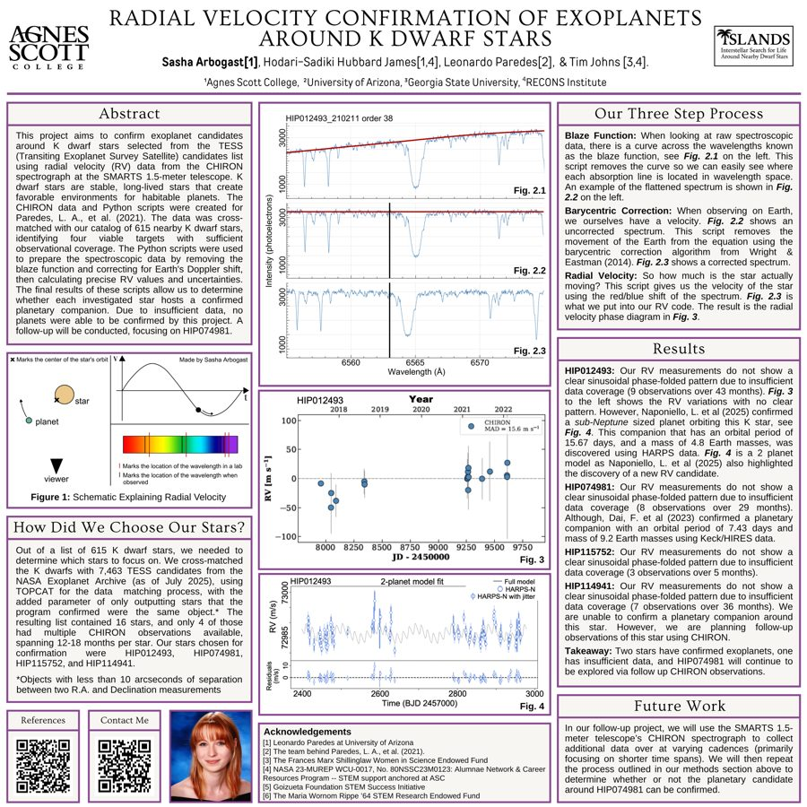
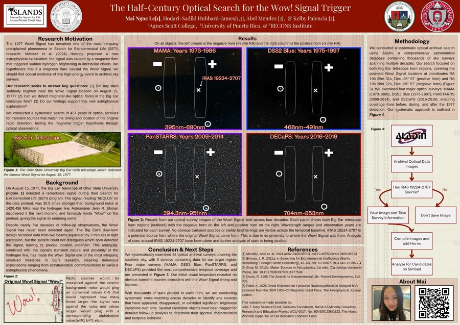
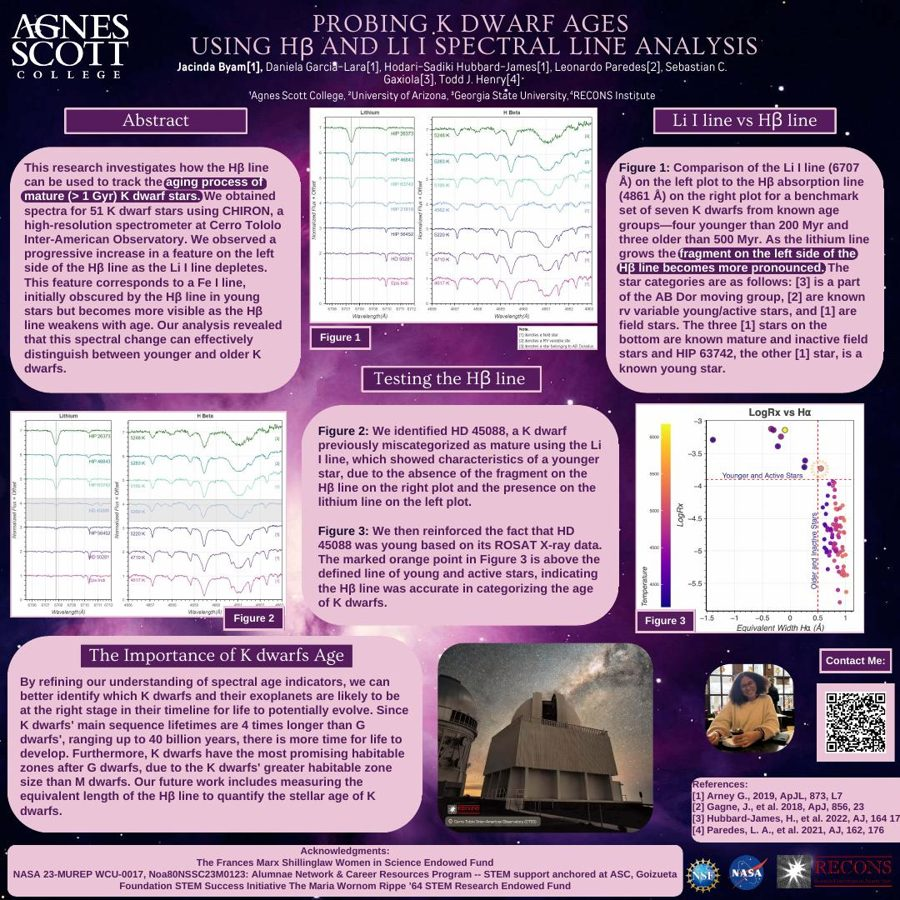
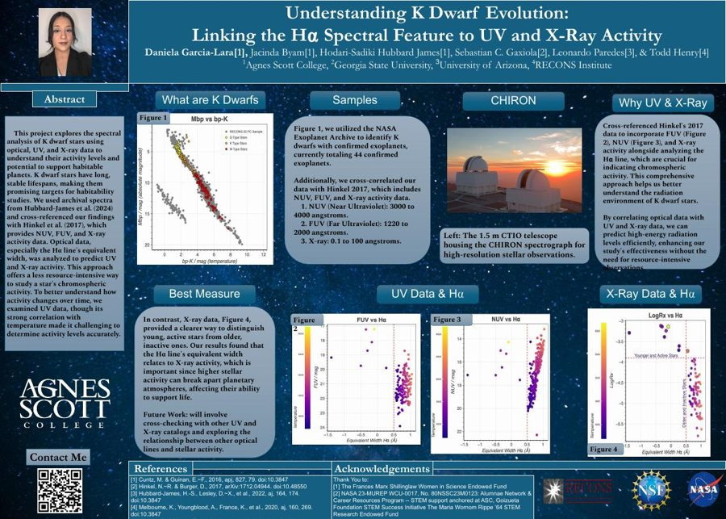

Research posters from the lab, most of them presented by undergraduate researchers. Click any poster to open the full PDF.

Preliminary Growth of Photosynthetic Organisms Under Synthetic K Dwarf Light
Southeastern Astronomy Research Conference (SpARC), 2026

Preliminary Growth of Photosynthetic Organisms Under Synthetic K Dwarf Light
ExplOrigins Symposium, Georgia Tech, 2026

The K Dwarf Advantage: Exploring Habitability Around the Sun’s Cooler Cousins
U.S. Frontiers of Science, National Academy of Sciences, March 2026

Radial Velocity Confirmation of Exoplanets Around K Dwarf Stars
STEM Scholars Program, Agnes Scott College, Summer 2025

The Half-Century Optical Search for the Wow! Signal Trigger
STEM Scholars Program, Agnes Scott College, Summer 2025

Probing K Dwarf Ages Using Hβ and Li I Spectral Line Analysis
NSBP/NSHP Joint Meeting, Houston, 2024

Understanding K Dwarf Evolution: Linking the Hα Spectral Feature to UV and X-Ray Activity
NSBP/NSHP Joint Meeting, Houston, 2024